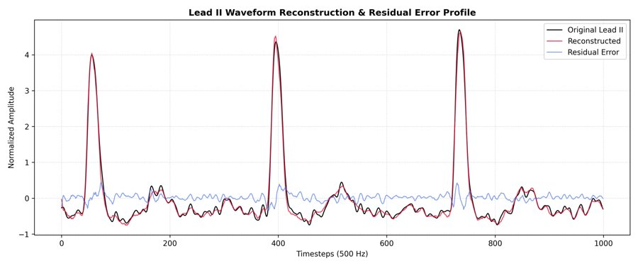
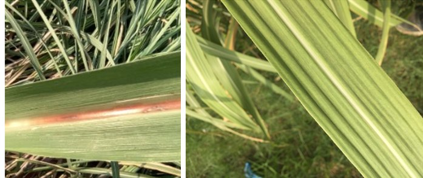
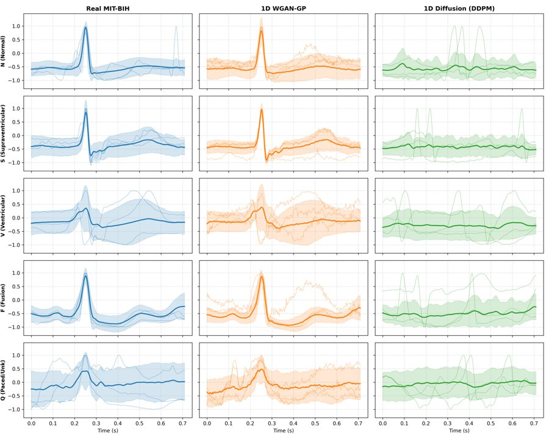
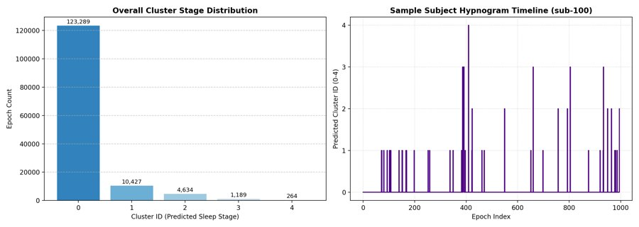
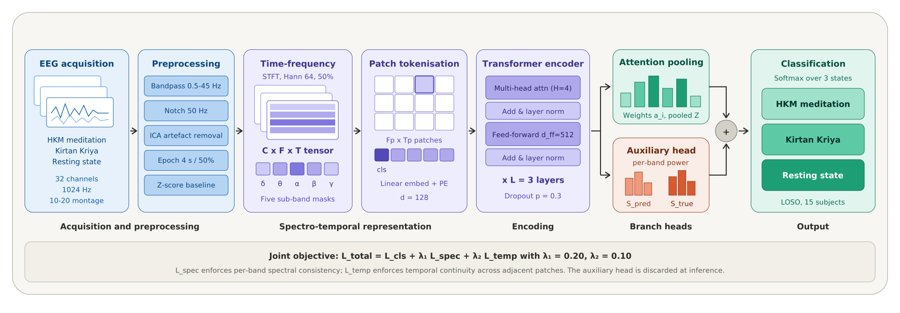

Gaurav Kunwar
Assistant Professor, DIT University, Dehradun · M.Tech, NIT Silchar
gauravkunwarweb [at] gmail.com
Hi, I am Gaurav. I am an Assistant Professor at DIT University, Dehradun, where I teach C programming, R programming and operating systems to undergraduates. I did my M.Tech in Computer Science and Engineering at NIT Silchar, where my thesis with Dr. Aparajita Dutta trained Vision Transformers to detect sugarcane leaf disease and used Integrated Gradients to check which parts of an image the model relies on.
My research is on deep learning that can be trusted and deployed. Recently I have worked on low-precision (MXINT8) Transformers for ECG on memory-limited devices, on GANs and diffusion models for synthetic biosignals, on unsupervised analysis of ear-EEG where auditing the labels changed what the study could claim, and on graph neural networks with SHAP for risk prediction from electronic health records. Across these projects I care about reporting what a model actually shows, including what it does not.
I am applying to PhD programmes starting in 2027. Feel free to reach out.
research interests
Interpretable and trustworthy machine learning · efficient, quantized inference for Transformers · deep learning for biomedical signals and images (ECG, EEG, EHR) · computer vision · graph neural networks
news
| Nov 2026 | Three first-author papers are under review at ICMC 2027: MXINT8 quantized ECG Transformers, GANs vs. diffusion for synthetic ECG, and spectral-state discovery from ear-EEG. |
| Oct 2026 | NetCrypt 2026 at JNU, New Delhi: our paper on Vision Transformers for sugarcane disease detection (with Dr. Aparajita Dutta) was accepted for oral presentation. |
| Jun 2026 | Reviewed for IEEE Transactions on Consumer Electronics. |
| May 2026 | Presented our structural-variant detection benchmark at IC2E3-2026, NIT Uttarakhand. |
| Aug 2025 | Joined DIT University, Dehradun, as Assistant Professor. |
| Jun 2025 | Completed my M.Tech in Computer Science and Engineering at NIT Silchar. |
| Mar 2023 | Two papers published at IEEE ISCON 2023 (phishing URL detection, lung image analysis). |
selected publications





Full list on the publications page.